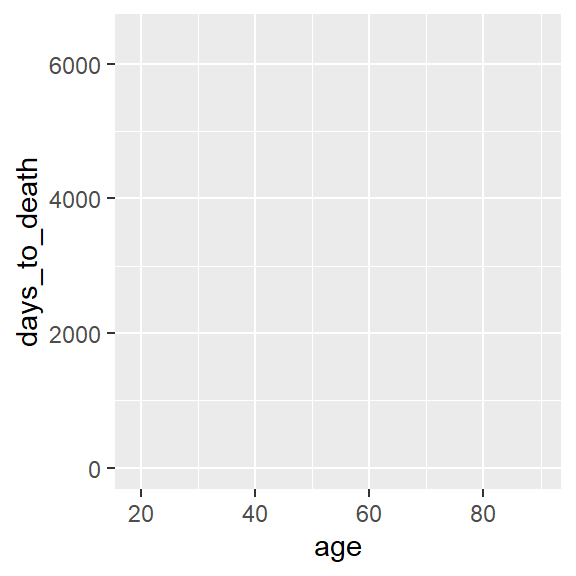

Einführung in R Programming
Andreas Mock
Nationales Centrum für Tumorerkrankungen (NCT) Heidelberg
Kursinformationen
Sommersemester 2020/2021
Link zum Webinar Termin 2 am 12.05.2020 17:15-18:45 Uhr - Heiconf Raum 6
- Termin 1 (R 101): 21.04.2020 17:00-18:30 Uhr
- Termin 2 (Datentransformation und Plotting): 12.05.2020 17:15-18:45 Uhr
- Termin 3 (Input und statistische Modellierung): 19.05.2020 17:15-18:45 Uhr
- Termin 4 (Überlebenszeitanalyse): 16.06.2020 17:00-18:30 Uhr
- Termin 5 (RNA-seq Analyse): 23.06.2020 17:00-18:30 Uhr
Vorbereitungen
1 | R 101
Lehrkapitel
Präsentation (gleicher Inhalt wie Website)
Einführung
Was ist R?
Rist eine freie Programmiersprache für statistische Berechnungen und Grafiken.- Obwohl
Rbereits alt ist (Erscheinungsjahr 1993) gilt diese als Standardsprache für statistische Problemstellungen in Wirtschaft und Wissenschaft - 16102 Formelsammlungen (Stand 11.06.2019) für spezifische Fragestellungen (sog. Pakete)
- Hoch-qualitative und individuelle Grafiken - viele Wissenschaftler benutzen
Rnur hierzu - Sowohl
R, als auch alle Pakete sind kostenlos!!
RStudio
- Grafische Benutzeroberfläche und Entwicklungsumgebung für
R

Abbildung: R for Data Science, Hadley Wickham & Garrett Grolemund 2016
Data Science
Data Science mit R umfasst den Import, Aufbereitung, Transformation, Visualisierung, Modellierung und Kommunikation von Daten.

Abbildung: R for Data Science, Hadley Wickham & Garrett Grolemund 2016
Objekttypen
R ist eine Objekt-orientierte Programmiersprache. Es dreht sich daher im Grunde alles darum Objekte herzustellen, zu manipulieren und zu visualisieren.
# Zuweisung von Zahlen zu einem Objekt
alter <- 67R ist case-sensitive - Groß- und Kleinschreibung ist wichtig!
# Objekt `alter` ausgeben
alter## [1] 67# .. entspricht nicht
Alter## Error in eval(expr, envir, enclos): object 'Alter' not foundVektor
Def: Sammlung mehrerer Objekte gleicher Art (Länge 1 ist möglich).
# numerischer Vektor mit Länge 1
x1 <- 5
# Charaktervektor mit Länge 1 (Text wird in "" gesetzt)
x2 <- "green"
# Vektoren mit Länge 3
y1 <- c(1,3,9)
y2 <- c("gene1","gene2","gene3")Subsetting:
# um den vollständigen Vektor y2 auszugeben
y2## [1] "gene1" "gene2" "gene3"# um nur die ersten beiden Einträge des Vektors y2 auszugeben
y2[1:2]## [1] "gene1" "gene2"Matrix
Kombination mehrerer Vektoren gleichen Typs (numerisch oder Charakter). Die Matrix kann Zeilen- und Spaltennamen haben.
matrix <- cbind(y1, y1, y1)
rownames(matrix) <- y2
colnames(matrix) <- c("sample1","sample2","sample3")
matrix## sample1 sample2 sample3
## gene1 1 1 1
## gene2 3 3 3
## gene3 9 9 9Ein Subset kann man sich mit der folgenden Syntax anzeigen lassen:
matrix[Zeile,Spalte]Bespiele hierfür sind:
matrix[1,]## sample1 sample2 sample3
## 1 1 1matrix[,3]## gene1 gene2 gene3
## 1 3 9matrix[1:2,]## sample1 sample2 sample3
## gene1 1 1 1
## gene2 3 3 3Dataframe
Im Gegensatz zu Matrizen können in Dataframes Vektoren verschiedenen Typs (z.B. numerischer Vektor und Charaktervektor) miteinander kombiniert werden. Wichtig: Die Vektoren müssen die gleiche Länge haben.
df <- data.frame(age=c(50,47,87),
gender=c("male","male","female"))
df## age gender
## 1 50 male
## 2 47 male
## 3 87 femaleSomit eignen sich Dataframes insbesondere für die Analyse von Patientenmetadaten im Rahmen von molekularbiologischen Experimenten oder klinischen Studien.
df## age gender
## 1 50 male
## 2 47 male
## 3 87 femaleEine Besonderheit von Dataframes ist die Möglichkeit einzelne Spalten durch den Spaltennamen zu selektieren.
df$age## [1] 50 47 87Dies entspricht der folgenden Matrixnotation
df[,1]## [1] 50 47 87Übersicht Objekttypen

Funktionen
Die Grundsyntax einer jeden Funktion ist
function(Objekt, Argumente)Die Argumente sind hierbei fakultativ. R besitzt eine Vielzahl von Funktionen, ohne dass zusätzliche Packete geladen werden müssen.
sum(y1)## [1] 13mean(y1)## [1] 4.333333Die Funktion help öffnet die Dokumentation in RStudio und zeigt die notwendigen Objekte und Argumente zu jeder Funktion an. Als Beispiel, was genau macht die Funktion cbind?
help(cbind)## starting httpd help server ... doneObjekttyp ausgeben
Die Funktion class ermöglicht es den Typ eines Objektes zu eruieren:
class(df)## [1] "data.frame"Pakete
Ein Paket ist nicht anderes als eine wohldurchdachte Formelsammlung, die für eine spezifische wissenschaftliche Fragestellung (z.B. die Analyse von Sequenzierungsdaten) entwickelt wurde.
Installation
install.packages("tidyverse")Ins Environment laden
library(tidyverse)Bespieldaten des Kurses
Metadaten des The Cancer Genome Atlas (TCGA) zur Analyse von Kopf-Hals-Tumoren (head and neck squamous cell carcinoma; HNSCC). Der Datensatz fasst die wichtigsten klinisch-pathologischen Charakteristika der Studienkohorte (n=279) zusammen.
#Datensatz in R laden
load(url("http://andreasmock.github.io/data/hnscc.RData"))hnscc## # A tibble: 279 x 11
## id age alcohol days_to_death gender neoplasm_site grade pack_years
## <chr> <int> <chr> <int> <chr> <chr> <chr> <dbl>
## 1 TCGA~ 69 YES 461 MALE Oral Tongue G3 51
## 2 TCGA~ 39 YES 415 MALE Larynx G2 30
## 3 TCGA~ 45 YES 1134 FEMALE Base of Tong~ G2 30
## 4 TCGA~ 83 NO 276 MALE Larynx G2 75
## 5 TCGA~ 47 YES 248 MALE Floor of Mou~ G2 60
## 6 TCGA~ 72 YES 190 MALE Buccal Mucosa G1 20
## 7 TCGA~ 56 YES 845 MALE Alveolar Rid~ G2 NA
## 8 TCGA~ 51 YES 1761 MALE Tonsil G2 NA
## 9 TCGA~ 54 YES 186 MALE Larynx G2 62
## 10 TCGA~ 58 YES 179 FEMALE Floor of Mou~ G3 60
## # ... with 269 more rows, and 3 more variables: tabacco_group <chr>,
## # tumor_stage <chr>, vital_status <chr>Funktionen zur Exploration von Dataframes
colnames(hnscc)## [1] "id" "age" "alcohol" "days_to_death"
## [5] "gender" "neoplasm_site" "grade" "pack_years"
## [9] "tabacco_group" "tumor_stage" "vital_status"head(hnscc$age)## [1] 69 39 45 83 47 72summary(hnscc$age)## Min. 1st Qu. Median Mean 3rd Qu. Max.
## 19.00 53.00 61.00 61.32 69.00 90.00head(hnscc$alcohol)## [1] "YES" "YES" "YES" "NO" "YES" "YES"table(hnscc$alcohol)##
## NO YES
## 85 188table(is.na(hnscc$alcohol))##
## FALSE TRUE
## 273 6summary(hnscc$days_to_death)## Min. 1st Qu. Median Mean 3rd Qu. Max. NA's
## 0.0 218.8 443.0 789.0 999.2 6416.0 1table(hnscc$gender)##
## FEMALE MALE
## 76 203table(hnscc$neoplasm_site)##
## Alveolar Ridge Base of Tongue Buccal Mucosa Floor of Mouth Hard Palate
## 7 12 8 26 5
## Hypopharynx Larynx Lip Oral Cavity Oral Tongue
## 2 72 1 49 76
## Oropharynx Tonsil
## 2 19table(hnscc$grade)##
## G1 G2 G3 G4 GX
## 23 176 71 1 8summary(hnscc$pack_years)## Min. 1st Qu. Median Mean 3rd Qu. Max. NA's
## 0.01685 30.00000 45.00000 50.62485 60.00000 300.00000 125table(hnscc$tabacco_group)##
## Current reformed smoker for < or = 15 years
## 81
## Current reformed smoker for > 15 years
## 49
## Current smoker
## 90
## Lifelong Non-smoker
## 52table(hnscc$tumor_stage)##
## Stage I Stage II Stage III Stage IVA Stage IVB
## 14 44 38 139 5table(hnscc$vital_status)##
## DECEASED LIVING
## 116 163Zusammenfassung der Funktionen
# Tabelle von kategoriellen Daten
table(<data>)
# Tabelle von fehlenden Informationen
table(is.na(<data>))
# Summary von kontinuierlichen Daten
summary(<data>)Übung
- Installiert das Paket ‘tidyverse’ und ladet es in euer Environment.
- Ladet den Beispieldatansatz in euer Environment
load(url("http://andreasmock.github.io/data/hnscc.RData"))- Beantwortet die folgenden Fragen zum Datensatz
- Wie viele Patienten trinken regelmäßig Alkohol?
- Was ist die häufigste Lokalisation der Tumoren?
- Bei wie vielen Patienten ist das Grading unbekannt?
- Was ist die maximale Anzahl von Packyears, die angegeben wurde?
- Wie viele Angaben fehlen in der Spalte “pack_years”?
- In welchem Bereich bewegte sich das Überleben der Patienten?
2 | Transformation und Plotting
Lehrkapitel
Präsentation (gleicher Inhalt wie Website)
Objekttypen 2.0
Faktor
Faktor: spezielle Unterform eines Vektors für kategoriale Variablen. Ein Faktor fasst die Kategorien (= Levels) zusammen.
# Vektor
head(hnscc$grade)## [1] "G3" "G2" "G2" "G2" "G2" "G1"# Faktor
head(as.factor(hnscc$grade))## [1] G3 G2 G2 G2 G2 G1
## Levels: G1 G2 G3 G4 GXTibbles
Tibbles sind morderne Dataframes.
class(hnscc)## [1] "tbl_df" "tbl" "data.frame"Der hnscc Datensatz ist eigentlich streng genommen kein Dataframe, sondern ein sogenannter Tibble, die moderne Weiterentwicklung eines R Dataframes.
hnscc## # A tibble: 279 x 11
## id age alcohol days_to_death gender neoplasm_site grade pack_years
## <chr> <int> <chr> <int> <chr> <chr> <chr> <dbl>
## 1 TCGA~ 69 YES 461 MALE Oral Tongue G3 51
## 2 TCGA~ 39 YES 415 MALE Larynx G2 30
## 3 TCGA~ 45 YES 1134 FEMALE Base of Tong~ G2 30
## 4 TCGA~ 83 NO 276 MALE Larynx G2 75
## 5 TCGA~ 47 YES 248 MALE Floor of Mou~ G2 60
## 6 TCGA~ 72 YES 190 MALE Buccal Mucosa G1 20
## 7 TCGA~ 56 YES 845 MALE Alveolar Rid~ G2 NA
## 8 TCGA~ 51 YES 1761 MALE Tonsil G2 NA
## 9 TCGA~ 54 YES 186 MALE Larynx G2 62
## 10 TCGA~ 58 YES 179 FEMALE Floor of Mou~ G3 60
## # ... with 269 more rows, and 3 more variables: tabacco_group <chr>,
## # tumor_stage <chr>, vital_status <chr>Datentransformation
HNSCC Datensatz laden.
load(url("http://andreasmock.github.io/data/hnscc.RData"))Warum Datentransformation? Oftmals sind wir nur an Teilmengen eines Datensatzes interessiert, bzw. möchten Proben nach verschiedenen Merkmalen zusammengruppieren.
Die Funktionen zur Datentransformation sind innerhalb des “Tidyverse” im dplyr Paket zu finden. Habt ihr das tidyverse Paket geladen, so wird automatisch auch das dplyr Paket geladen.
library(tidyverse)Übersicht
| Transformation | Funktion |
|---|---|
| Zeilen filtern | filter() |
| Zeilen sortieren | arrange() |
| Spalten selektieren | select() |
| Spaltennamen umbenennen | rename() |
| Neue Spalten hinzufügen | mutate() |
| Gruppenweise transformieren | group_by() & summarize() |
| Transformationen kombinieren | pipe Funktion %>% |
Zeilen filtern mit filter()
Die Funktion filter() ermöglicht es uns ein Subset aus den Zeilen auszuwählen. Das erste Argument ist das Objekt, die weiteren Argumente sind die Spalten, wonach wir filtern möchten.
young <- filter(hnscc, age<50)
young## # A tibble: 42 x 11
## id age alcohol days_to_death gender neoplasm_site grade pack_years
## <chr> <int> <chr> <int> <chr> <chr> <chr> <dbl>
## 1 TCGA~ 39 YES 415 MALE Larynx G2 30
## 2 TCGA~ 45 YES 1134 FEMALE Base of Tong~ G2 30
## 3 TCGA~ 47 YES 248 MALE Floor of Mou~ G2 60
## 4 TCGA~ 41 YES 242 FEMALE Oral Tongue G2 NA
## 5 TCGA~ 47 YES 395 MALE Floor of Mou~ G2 40
## 6 TCGA~ 28 YES 113 MALE Oral Tongue G2 1
## 7 TCGA~ 48 NO 2891 MALE Tonsil G3 NA
## 8 TCGA~ 19 NO 240 MALE Oral Tongue G2 NA
## 9 TCGA~ 48 YES 397 FEMALE Oral Tongue G3 20
## 10 TCGA~ 48 YES 252 MALE Larynx G3 15
## # ... with 32 more rows, and 3 more variables: tabacco_group <chr>,
## # tumor_stage <chr>, vital_status <chr>larynx <- filter(hnscc, neoplasm_site=="Larynx")
larynx## # A tibble: 72 x 11
## id age alcohol days_to_death gender neoplasm_site grade pack_years
## <chr> <int> <chr> <int> <chr> <chr> <chr> <dbl>
## 1 TCGA~ 39 YES 415 MALE Larynx G2 30
## 2 TCGA~ 83 NO 276 MALE Larynx G2 75
## 3 TCGA~ 54 YES 186 MALE Larynx G2 62
## 4 TCGA~ 53 YES 152 MALE Larynx G2 60
## 5 TCGA~ 62 YES 244 MALE Larynx G2 46
## 6 TCGA~ 60 YES 450 FEMALE Larynx G2 40
## 7 TCGA~ 68 YES 186 MALE Larynx G3 60
## 8 TCGA~ 67 YES 412 MALE Larynx G2 NA
## 9 TCGA~ 56 YES 194 MALE Larynx G2 80
## 10 TCGA~ 52 YES 369 MALE Larynx G3 120
## # ... with 62 more rows, and 3 more variables: tabacco_group <chr>,
## # tumor_stage <chr>, vital_status <chr>Logische Operatoren
Die doppelten Gleichheitszeichen entsprechen der Frage: Ist der Eintrag in neoplasm_site = "Larynx". Das Resultat der Frage ist ein Vektor mit den Informationen TRUE oder FALSE pro Eintrag eines Vektors.
table(hnscc$neoplasm_site=="Larynx")##
## FALSE TRUE
## 207 72Die Notation um alle Sites außer Larynx zu filtern ist, ein Ausrufezeichen vor den Ausdruck zu setzen:
filter(hnscc, !neoplasm_site=="Larynx")Mehrere Sites können wie folgt ausgewählt werden:
filter(hnscc, neoplasm_site %in% c("Tonsil", "Oral Tongue", "Hard Palate"))Im Filterprozess können Informationen aus beliebig vielen Spalten miteinander kombiniert werden.
young_larynx <- filter(hnscc, age<50, neoplasm_site=="Larynx")
young_larynx## # A tibble: 8 x 11
## id age alcohol days_to_death gender neoplasm_site grade pack_years
## <chr> <int> <chr> <int> <chr> <chr> <chr> <dbl>
## 1 TCGA~ 39 YES 415 MALE Larynx G2 30
## 2 TCGA~ 48 YES 252 MALE Larynx G3 15
## 3 TCGA~ 49 <NA> 201 MALE Larynx G3 NA
## 4 TCGA~ 47 YES 42 MALE Larynx G3 40
## 5 TCGA~ 45 NO 93 FEMALE Larynx G2 60
## 6 TCGA~ 49 NO 600 MALE Larynx G3 16
## 7 TCGA~ 38 NO 669 MALE Larynx GX 21
## 8 TCGA~ 47 YES 35 MALE Larynx G2 20
## # ... with 3 more variables: tabacco_group <chr>, tumor_stage <chr>,
## # vital_status <chr>Zeilen sortieren mit arrange()
Die Funktion arrange() sortiert Zeilen nach Spalteninformationen.
arrange(hnscc, grade)## # A tibble: 279 x 11
## id age alcohol days_to_death gender neoplasm_site grade pack_years
## <chr> <int> <chr> <int> <chr> <chr> <chr> <dbl>
## 1 TCGA~ 72 YES 190 MALE Buccal Mucosa G1 20
## 2 TCGA~ 65 YES 1635 MALE Hard Palate G1 NA
## 3 TCGA~ 61 YES 236 MALE Oral Tongue G1 46
## 4 TCGA~ 55 YES 413 FEMALE Floor of Mou~ G1 60
## 5 TCGA~ 52 YES 1440 MALE Oral Cavity G1 45
## 6 TCGA~ 45 YES 759 MALE Oral Tongue G1 NA
## 7 TCGA~ 69 YES 1430 MALE Oral Cavity G1 54
## 8 TCGA~ 36 YES 913 FEMALE Oral Tongue G1 NA
## 9 TCGA~ 67 NO 946 FEMALE Oral Tongue G1 30
## 10 TCGA~ 62 NO 743 MALE Oral Tongue G1 NA
## # ... with 269 more rows, and 3 more variables: tabacco_group <chr>,
## # tumor_stage <chr>, vital_status <chr>Hierbei kann wie auch beim Filtern eine Sortierung in mehreren Schritten erfolgen.
arrange(hnscc, age, grade)## # A tibble: 279 x 11
## id age alcohol days_to_death gender neoplasm_site grade pack_years
## <chr> <int> <chr> <int> <chr> <chr> <chr> <dbl>
## 1 TCGA~ 19 NO 240 MALE Oral Tongue G2 NA
## 2 TCGA~ 26 YES 908 MALE Oral Tongue G2 NA
## 3 TCGA~ 26 YES 1315 MALE Oral Tongue G2 NA
## 4 TCGA~ 28 YES 113 MALE Oral Tongue G2 1
## 5 TCGA~ 29 <NA> 761 FEMALE Oral Tongue GX NA
## 6 TCGA~ 32 YES 64 FEMALE Oral Tongue G2 NA
## 7 TCGA~ 34 YES 327 MALE Oral Tongue G2 NA
## 8 TCGA~ 35 YES 1152 FEMALE Tonsil GX NA
## 9 TCGA~ 36 YES 913 FEMALE Oral Tongue G1 NA
## 10 TCGA~ 38 YES 351 MALE Tonsil G2 26
## # ... with 269 more rows, and 3 more variables: tabacco_group <chr>,
## # tumor_stage <chr>, vital_status <chr>Spalten selektieren mit select()
select(hnscc, days_to_death, vital_status)## # A tibble: 279 x 2
## days_to_death vital_status
## <int> <chr>
## 1 461 DECEASED
## 2 415 DECEASED
## 3 1134 DECEASED
## 4 276 DECEASED
## 5 248 LIVING
## 6 190 LIVING
## 7 845 LIVING
## 8 1761 DECEASED
## 9 186 LIVING
## 10 179 LIVING
## # ... with 269 more rowsUmgekehrt können auch Spalten ausgeschlossen werden
select(hnscc, -c(id,age))## # A tibble: 279 x 9
## alcohol days_to_death gender neoplasm_site grade pack_years tabacco_group
## <chr> <int> <chr> <chr> <chr> <dbl> <chr>
## 1 YES 461 MALE Oral Tongue G3 51 Current smok~
## 2 YES 415 MALE Larynx G2 30 Current smok~
## 3 YES 1134 FEMALE Base of Tong~ G2 30 Current refo~
## 4 NO 276 MALE Larynx G2 75 Current refo~
## 5 YES 248 MALE Floor of Mou~ G2 60 Current smok~
## 6 YES 190 MALE Buccal Mucosa G1 20 Current refo~
## 7 YES 845 MALE Alveolar Rid~ G2 NA Lifelong Non~
## 8 YES 1761 MALE Tonsil G2 NA Lifelong Non~
## 9 YES 186 MALE Larynx G2 62 Current refo~
## 10 YES 179 FEMALE Floor of Mou~ G3 60 Current refo~
## # ... with 269 more rows, and 2 more variables: tumor_stage <chr>,
## # vital_status <chr>Spaltennamen umbenennen mit rename()
rename(hnscc, barcode=id)## # A tibble: 279 x 11
## barcode age alcohol days_to_death gender neoplasm_site grade pack_years
## <chr> <int> <chr> <int> <chr> <chr> <chr> <dbl>
## 1 TCGA-B~ 69 YES 461 MALE Oral Tongue G3 51
## 2 TCGA-B~ 39 YES 415 MALE Larynx G2 30
## 3 TCGA-B~ 45 YES 1134 FEMALE Base of Tong~ G2 30
## 4 TCGA-B~ 83 NO 276 MALE Larynx G2 75
## 5 TCGA-B~ 47 YES 248 MALE Floor of Mou~ G2 60
## 6 TCGA-B~ 72 YES 190 MALE Buccal Mucosa G1 20
## 7 TCGA-B~ 56 YES 845 MALE Alveolar Rid~ G2 NA
## 8 TCGA-B~ 51 YES 1761 MALE Tonsil G2 NA
## 9 TCGA-B~ 54 YES 186 MALE Larynx G2 62
## 10 TCGA-B~ 58 YES 179 FEMALE Floor of Mou~ G3 60
## # ... with 269 more rows, and 3 more variables: tabacco_group <chr>,
## # tumor_stage <chr>, vital_status <chr>Neue Spalten hinzufügen mit mutate()
hnscc <- mutate(hnscc, years_to_death=(days_to_death/365))
summary(hnscc$years_to_death)## Min. 1st Qu. Median Mean 3rd Qu. Max. NA's
## 0.0000 0.5993 1.2137 2.1615 2.7377 17.5781 1Gruppenweise transformieren group_by() und summarize()
by_site <- group_by(hnscc, neoplasm_site)
summarize(by_site, mean_age=mean(age))## # A tibble: 12 x 2
## neoplasm_site mean_age
## <chr> <dbl>
## 1 Alveolar Ridge 67.7
## 2 Base of Tongue 61.7
## 3 Buccal Mucosa 70.6
## 4 Floor of Mouth 63.4
## 5 Hard Palate 76.4
## 6 Hypopharynx 59.5
## 7 Larynx 61.1
## 8 Lip 69
## 9 Oral Cavity 66.5
## 10 Oral Tongue 56.9
## 11 Oropharynx 55.5
## 12 Tonsil 53.5Transformationen kombinieren mit der pipe Funktion %>%
hnscc %>%
filter(!neoplasm_site %in% c("Base of Tongue","Oral Tongue")) %>%
group_by(neoplasm_site) %>%
summarize(count=n(),
mean_age=mean(age))## # A tibble: 10 x 3
## neoplasm_site count mean_age
## <chr> <int> <dbl>
## 1 Alveolar Ridge 7 67.7
## 2 Buccal Mucosa 8 70.6
## 3 Floor of Mouth 26 63.4
## 4 Hard Palate 5 76.4
## 5 Hypopharynx 2 59.5
## 6 Larynx 72 61.1
## 7 Lip 1 69
## 8 Oral Cavity 49 66.5
## 9 Oropharynx 2 55.5
## 10 Tonsil 19 53.5Datenvisualisierung mit ggplot2
Funktionsweise der ggplot Funktion
Leere Leinwand. age auf der x-Achse und days_to_death auf der y-Achse.
ggplot(hnscc, aes(x=age, y=days_to_death))
ggplot(hnscc, aes(x=age, y=days_to_death))Mit den sogenannten Aesthetics aes definieren wir die Dimensionen an Informationen, die wir im Plot darstellen möchten.
Dieser leeren Leinwand werden nun sogenannte geoms hinzugefügt, z.B. geom_point für einen Dotplot.
ggplot(hnscc, aes(x=age, y=days_to_death)) +
geom_point()Dotplot
ggplot(hnscc, aes(x=age, y=days_to_death)) +
geom_point()## Warning: Removed 1 rows containing missing values (geom_point).Boxplot
ggplot(hnscc, aes(x=grade, y=pack_years)) +
geom_boxplot()## Warning: Removed 125 rows containing non-finite values (stat_boxplot).
Histogramm
ggplot(hnscc, aes(x=age)) +
geom_histogram()## `stat_bin()` using `bins = 30`. Pick better value with `binwidth`.Density plot
ggplot(hnscc, aes(x=age)) +
geom_density()
Transformation für Barplot
hnscc %>%
group_by(neoplasm_site) %>%
summarize(mean_age=mean(age)) %>%
ggplot(aes(x=reorder(neoplasm_site,mean_age),y=mean_age)) +
geom_bar(stat="identity") +
coord_flip() +
xlab("anatomical site") +
ylab("mean age")Aesthetics
Bisher haben wir als aesthetics nur die x- und y-Achse verwendet. ggplot2 bietet jedoch noch weitere Dimensionen von Daten als aesthetics zu definieren
Aesthetic - color
Coloring - kategoriale Variable neoplasm site.
ggplot(hnscc, aes(x=age, y=days_to_death, color=neoplasm_site)) +
geom_point() +
guides(color=guide_legend(ncol=2))## Warning: Removed 1 rows containing missing values (geom_point).Coloring - numerische Variable packyears.
ggplot(hnscc, aes(x=age, y=days_to_death, color=pack_years)) +
geom_point()## Warning: Removed 1 rows containing missing values (geom_point).
Aesthetic - size
ggplot(hnscc, aes(x=age, y=days_to_death, size=pack_years)) +
geom_point()## Warning: Removed 126 rows containing missing values (geom_point).
Aesthetic - shape
ggplot(hnscc, aes(x=age, y=days_to_death, shape=grade)) +
geom_point()## Warning: Removed 1 rows containing missing values (geom_point).Facetting
Über die Aesthetics hinaus gibt es die Möglichkeit Plots nach kategorialen Variablen zu stratefizieren.
ggplot(hnscc, aes(x=age, y=days_to_death, color=neoplasm_site)) +
geom_point() +
facet_wrap(~alcohol) +
guides(color=guide_legend(ncol=2))## Warning: Removed 1 rows containing missing values (geom_point).Weiterführende Informationen
Datentransformation mit dplyr
Link: http://r4ds.had.co.nz/transform.html
Datenvisualisierung mit ggplot2
Link: http://r4ds.had.co.nz/data-visualisation.html
Übung
- Vergleicht den Output eines “normalen” Dataframes mit einem Tibble. Welche zusätzlichen Informationen bzw. Funktionen beeinhaltet ein Tibble?
#Dataframe
head(as.data.frame(hnscc))## id age alcohol days_to_death gender neoplasm_site grade pack_years
## 1 TCGA-BA-4074 69 YES 461 MALE Oral Tongue G3 51
## 2 TCGA-BA-4076 39 YES 415 MALE Larynx G2 30
## 3 TCGA-BA-4077 45 YES 1134 FEMALE Base of Tongue G2 30
## 4 TCGA-BA-4078 83 NO 276 MALE Larynx G2 75
## 5 TCGA-BA-5149 47 YES 248 MALE Floor of Mouth G2 60
## 6 TCGA-BA-5151 72 YES 190 MALE Buccal Mucosa G1 20
## tabacco_group tumor_stage vital_status
## 1 Current smoker Stage IVA DECEASED
## 2 Current smoker <NA> DECEASED
## 3 Current reformed smoker for < or = 15 years Stage IVA DECEASED
## 4 Current reformed smoker for < or = 15 years <NA> DECEASED
## 5 Current smoker Stage IVA LIVING
## 6 Current reformed smoker for > 15 years Stage IVA LIVING
## years_to_death
## 1 1.2630137
## 2 1.1369863
## 3 3.1068493
## 4 0.7561644
## 5 0.6794521
## 6 0.5205479#Tibble
hnscc## # A tibble: 279 x 12
## id age alcohol days_to_death gender neoplasm_site grade pack_years
## <chr> <int> <chr> <int> <chr> <chr> <chr> <dbl>
## 1 TCGA~ 69 YES 461 MALE Oral Tongue G3 51
## 2 TCGA~ 39 YES 415 MALE Larynx G2 30
## 3 TCGA~ 45 YES 1134 FEMALE Base of Tong~ G2 30
## 4 TCGA~ 83 NO 276 MALE Larynx G2 75
## 5 TCGA~ 47 YES 248 MALE Floor of Mou~ G2 60
## 6 TCGA~ 72 YES 190 MALE Buccal Mucosa G1 20
## 7 TCGA~ 56 YES 845 MALE Alveolar Rid~ G2 NA
## 8 TCGA~ 51 YES 1761 MALE Tonsil G2 NA
## 9 TCGA~ 54 YES 186 MALE Larynx G2 62
## 10 TCGA~ 58 YES 179 FEMALE Floor of Mou~ G3 60
## # ... with 269 more rows, and 4 more variables: tabacco_group <chr>,
## # tumor_stage <chr>, vital_status <chr>, years_to_death <dbl>- Erstellt die folgenden Teilmengen des Datensatzes, bzw. führt die folgenden Transformationen aus:
- Junge Patienten (< 50 Jahre), Nichtraucher, Zeilen sortiert nach Alter.
- Dataframe mit Spalten “age” und “grade”. Ändert die Spaltennamen ins Deutsche um.
- Fügt dem
hnsccDataframe eine neue Spalte mit Namen “is_young” hinzu, die mit TRUE und FALSE kodiert, ob jemand < 50 Jahre ist. - Berechnet das mediane Gesamtüberleben nach Grading. Ist das Resultat biologisch plausibel?
In der heutigen Präsentation haben wir neben x-Achse und y-Achse weitere Aesthetics (shape, color, size), sowie das Facetting kennen gelernt. Überlegt euch eine sinnvolle Visualisierung (am besten Dotplot), die insgesamt 5 Dimensionen der Daten abbilden.a) In der heutigen Präsentation haben wir neben x-Achse und y-Achse weitere Aesthetics (shape, color, size), sowie das Facetting kennen gelernt. Überlegt euch eine sinnvolle Visualisierung (am besten Dotplot), die insgesamt 5 Dimensionen der Daten abbilden.
Versucht die Transformationen und Settings des folgenden Barplots nachzuvollziehen. Wie wird hier die Transformation mit dem Plotten verzahnt? Was macht z.B.
coord_flip?
hnscc %>%
group_by(neoplasm_site) %>%
summarize(mean_age=mean(age)) %>%
ggplot(aes(x=reorder(neoplasm_site,mean_age),y=mean_age)) +
geom_bar(stat="identity") +
coord_flip() +
xlab("anatomical site") +
ylab("mean age")
- “Googled” danach, wie man dem folgenden Plot eine Regressionsgrade hinzufügen kann:
ggplot(hnscc, aes(x=age, y=days_to_death)) +
geom_point()## Warning: Removed 1 rows containing missing values (geom_point).